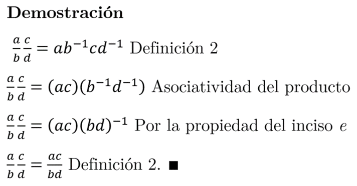
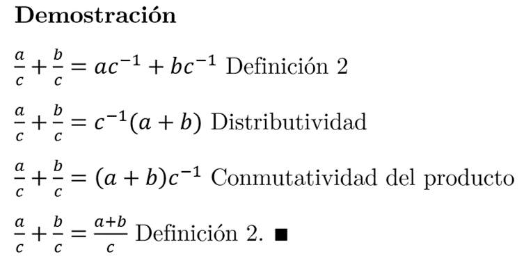
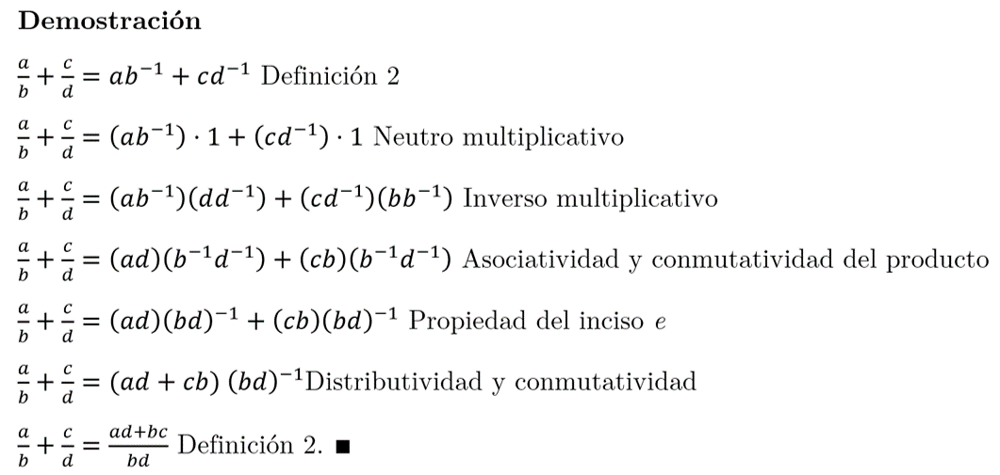

Problema 4
Si \(a\) es un número real cualquiera, entonces:
- \(-(-a)=a\)
- \((-1)a=-a\)
- \(a(-b)=(-a)b=-ab\)
- \((-a)(-b)=ab\)
- \((ab)^{-1}=a^{-1}b^{-1}, a\not=0, b\not=0\)
- \(\frac{a}{b}\frac{c}{d}=\frac{ac}{bd}\), \(b\not=0\), \(d\not=0\)
- \(\frac{a}{c}+\frac{b}{c}=\frac{a+b}{c}\), \(c\not=0\)
- \(\frac{a}{b}+\frac{c}{d}=\frac{ad+cb}{bd}\), \(b\not=0\), \(d\not=0\)
P4.A
P.D. \(-(-a)=a\)Demostración
\(-a-(-a)=0\quad\) Inversos aditivos
\(a-a-(-a)=a+0\)
\(0-(-a)=a+0\quad\) Inversos aditivos b
\(-(-a)=a\quad\) Neutro aditivo
\(\blacksquare\)
P4.B
P.D. \( (-1)a = -a\)Demostración
\((-1)a=(-1)a+0\quad\) Neutro aditivo
\((-1)a=(-1)a+a+(-a)\quad\) Inversos aditivos
\((-1)a=((-1)a+a)+(-a)\quad\) Asociatividad
\((-1)a=((-1)a+1\cdot a)+(-a)\quad\) Neutro multiplicativo
\((-1)a=(-1+1)a+(-a)\quad\) Distributividad
\((-1)a=(0)a+(-a)\quad\) Inversos aditivos
\((-1)a=0+(-a)\quad\) Teorema 1 de las notas
\((-1)a=-a\quad\) Neutro aditivo
Por lo tanto, \((-1)a=-a\) \(\blacksquare\)
P4.C
P.D. \(a(-b)=(-a)b=-ab\)Demostración
\(a(-b)=a((-1)b)\quad\) Propiedad del inciso b
\(a(-b)=(a(-1))b\quad\) Asociatividad
\(a(-b)=((-1)a)b\quad\) Conmutatividad
\(a(-b)=(-a)b\quad\) Propiedad del inciso b
Asociando y conmutando el producto de otra forma, tenemos
\(a(-b)=a((-1)b)\quad\) Propiedad del inciso b
\(a(-b)=a(-1)b\quad\) Asociatividad
\(a(-b)=(-1)ab\quad\) Conmutatividad
\(a(-b)=(-1)(ab)\quad\) Asociatividad
\(a(-b)=-ab\quad\) Propiedad del inciso b
Así, hemos obtenido las dos equivalencias buscadas. \(\blacksquare\)
P4.D
P.D. \((-a)(-b)=ab\)Demostración
\((-a)(-b)+0=(-a)(-b)+ab-ab\) Neutro y opuesto aditivo
\(=(-a)(-b)+ab+a(-b)\) Propiedad del inciso c
\(=((-a)(-b)+a(-b))+ab\) Asociatividad
\(=(-b)(-a+a)+ab\) Distributividad
\(=(-b)(0)+ab\) Opuesto aditivo
\(=ab\) Por Teorema 1 \(\blacksquare\)
P4.E
P.D. ((ab)^{-1}=a^{-1}b^{-1}, a\not=0, b\not=0\)Demostración
Como todo real distinto de cero tiene inverso multiplicativo, tenemos que: $$aa^{-1}=1, bb^{-1}=1$$ Multiplicando miembro a miembro e igualando: $$(aa^{-1})(bb^{-1})=1$$ Por conmutatividad y asociatividad del producto, podemos reescribir como sigue: $$(a^{-1}b^{-1})(ab)=1$$ Dado que \((ab)\) es un real no nulo, existe su inverso multiplicativo \((ab)^{-1}\). Multiplicando a ambos lados de la igualdad anterior por este inverso tendremos que $$(a^{-1}b^{-1})(ab)(ab)^{-1}=1(ab)^{-1}$$ Finalmente, por el neutro e inverso multiplicativo, obtenemos lo que se quería demostrar. $$a^{-1}b^{-1}=(ab)^{-1} \blacksquare$$
P4.F
P.D. \(\frac{a}{b}\frac{c}{d}=\frac{ac}{bd}\), \(b\not=0\), \(d\not=0\)Definición 2. \(\frac{a}{b}=a\frac{1}{b}=ab^{-1}\), \(b\not=0\)

P4.G
P.D. \(\frac{a}{c}+\frac{b}{c}=\frac{a+b}{c}\), \(c\not=0\)
P4.H
P.D. \(\frac{a}{b}+\frac{c}{d}=\frac{ad+cb}{bd}\), \(b\not=0\), \(d\not=0\)